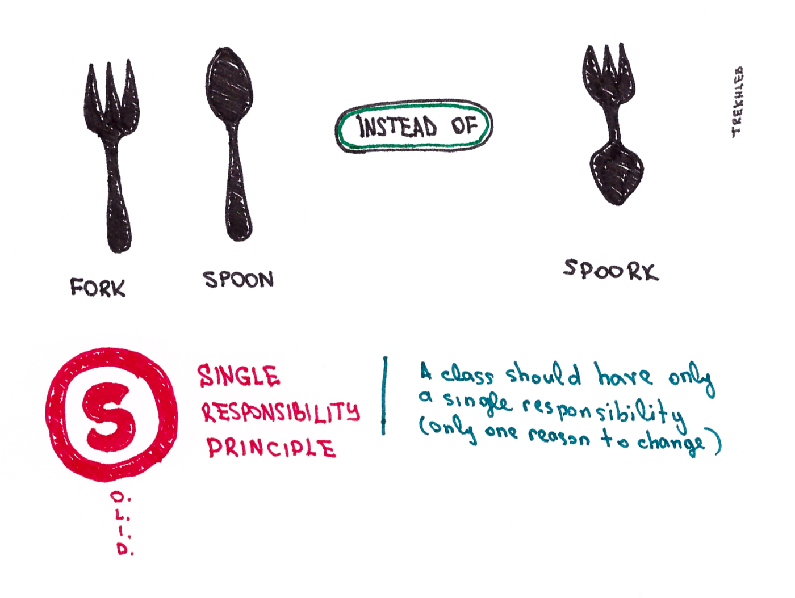
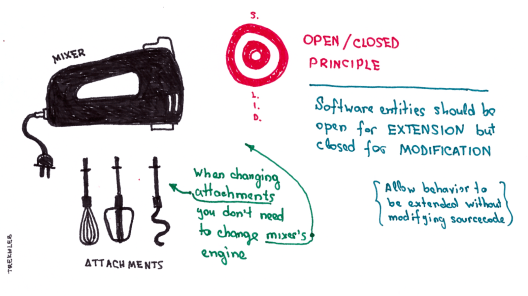
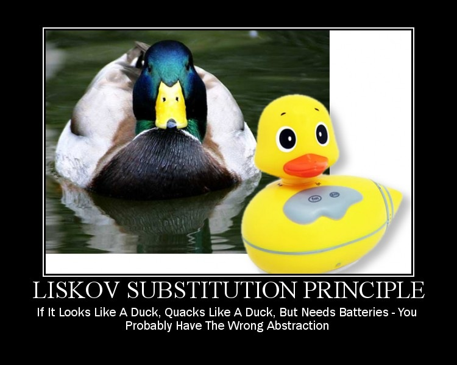
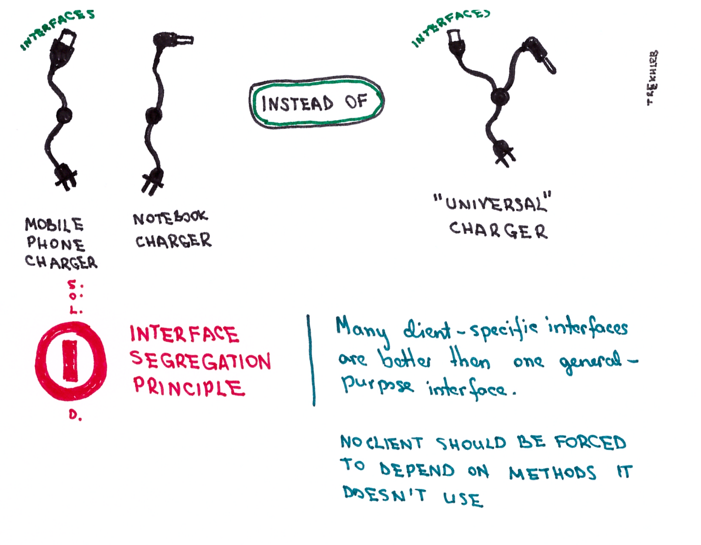
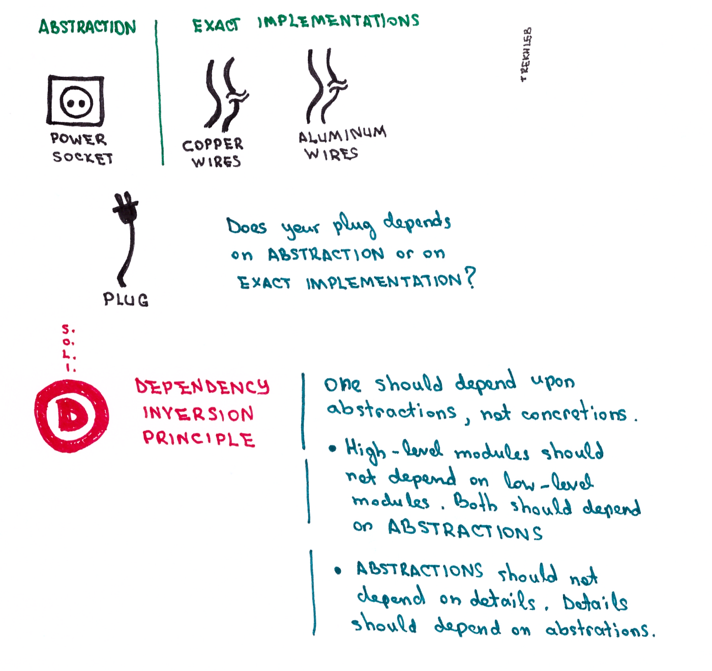

SOLID
Quick recap
- Complexity, and where it comes from
- Refactoring, and the smells that prompt it
- Testability as a property of the design
Four scales, one question
Design is the same question asked at four sizes. The answer changes at every rung.
| Scale | Unit | Where | The question |
|---|---|---|---|
| Code | a function | 3 – 6 | can a reader follow this? |
| Class | one class | here | what makes it change? |
| Component | a group of classes | 19-20 | which way do the dependencies point? |
| System | the whole thing | 21 | what is inside the boundary? |
Lectures 3 to 6 worked the bottom rung: complexity, refactoring, smells. All of it inside a function.
SOLID is the next rung up. Not better rules — the same concern, one size larger.
What a design principle is
Not a rule, not a pattern, not a library. A design principle is an abstract claim about structure that holds across languages and platforms.
Patterns tell you what to build. Principles tell you why one arrangement is worse than another.
Four ways a design rots
Before the principles, the symptoms they exist to answer.
| Symptom | What it feels like | |
|---|---|---|
| Rigidity | hard to change, even simply | one change cascades into dependent modules |
| Fragility | breaks in many places when changed | you fix here, it breaks somewhere unrelated |
| Immobility | cannot reuse a part elsewhere | the piece you want drags the whole system with it |
| Viscosity | the hack is easier than the fix | it is easy to do the wrong thing and hard to do the right thing |
Viscosity is the one that decides the other three. A design where the correct change is harder than the shortcut will get shortcuts, every time, from everybody.
The five
| Principle | One line | |
|---|---|---|
| S | Single Responsibility | one class, one reason to change |
| O | Open/Closed | open for extension, closed for modification |
| L | Liskov Substitution | a subclass must be usable as its base class |
| I | Interface Segregation | many small interfaces beat one large one |
| D | Dependency Inversion | both sides depend on an abstraction |
1. Single Responsibility
A class should have one, and only one, reason to change.

The violation
class Journal:
def __init__(self):
self.items = []
def add_entry(self, entry):
self.items.append(entry)
def __str__(self):
return "\n".join(self.items)
# a second responsibility, bolted on
def save(self, filename):
with open(filename, "w+") as fp:
fp.write(str(self))
def load(self, filename):
...
Journal now has two reasons to change: the rules of journalling, and the mechanics
of storage. Move to a database and a class about diary entries has to be edited.
The fix
class Journal:
def __init__(self):
self.items = []
def add_entry(self, entry):
self.items.append(entry)
def __str__(self):
return "\n".join(self.items)
class PersistenceManager:
@staticmethod
def save(journal, filename):
with open(filename, "w+") as fp:
fp.write(str(journal))
@staticmethod
def load(filename):
journal = Journal()
with open(filename) as fp:
for line in fp:
journal.add_entry(line.strip())
return journal
Nothing was deleted. The same two jobs exist — they now live in two places, and each has one reason to change.
💬 Is __str__ a second responsibility?
Journal still formats itself into text. That is arguably presentation, not
journalling. Should it move out too?
Answer
No — and the reason matters more than the answer.
A responsibility is a reason to change, not a category of work. Ask who would ask for the change:
- the format of a diary entry changes → whoever owns journalling
- the storage medium changes → whoever owns infrastructure
Those are different people. __str__ and add_entry answer to the same one.
SRP is not "one class, one method". It is one class, one audience. Split on every category of work and you get a hundred classes that must all change together, which is the same disease with more files.
SRP in a real code base
faculty_service.py#L98-L139 — forty
lines, three audiences:
def search_faculty_db(query, error_on_empty=True):
retriever = PostgresFullTextRetriever() # retrieval
records = retriever.retrieve_faculty(query, limit=10)
if not records:
return ("I couldn't find any faculty or staff members " # user-facing copy
f"matching **'{query}'** in our records.\n\n")
out = [f"### Search Results for '{query}'", ...] # Markdown formatting
for i, rec in enumerate(records, 1):
out.append(f"#### {i}. {rec.get('name')} …")
return "\n".join(out)
Swap the search backend, reword an error, restyle the output — three different people asking for three different things, all editing the same function.
The split
NOT_FOUND = ("I couldn't find any faculty or staff members matching "
"**'{query}'** in our records.\n\n…")
def search_faculty(query: str, retriever) -> list[dict]:
return retriever.retrieve_faculty(query, limit=10)
def format_faculty_results(query: str, records: list[dict]) -> str:
out = [f"### Search Results for '{query}'",
f"Found {len(records)} record(s):", ""]
for i, rec in enumerate(records, 1):
out.append(f"#### {i}. {rec.get('name')} ({rec.get('faculty_type')} Faculty)")
...
return "\n".join(out)
def search_faculty_db(query, error_on_empty=True, retriever=None): # composition only
records = search_faculty(query, retriever or PostgresFullTextRetriever())
if not records:
return NOT_FOUND.format(query=query) if error_on_empty else None
return format_faculty_results(query, records)
| Change | Before | After |
|---|---|---|
| swap search backend | search_faculty_db |
search_faculty |
| reword the error | search_faculty_db |
NOT_FOUND |
| restyle output | search_faculty_db |
format_faculty_results |
format_faculty_results is now pure — list in, string out. Three dicts and no database
test it. Nothing in that file could be tested that way before.
2. Open/Closed
A module should be open for extension but closed for modification.

The violation
class ProductFilter:
def filter_by_color(self, products, color):
for p in products:
if p.color == color: yield p
def filter_by_size(self, products, size):
for p in products:
if p.size == size: yield p
def filter_by_size_and_color(self, products, size, color):
for p in products:
if p.color == color and p.size == size: yield p
Count the methods as criteria are added:
| Criteria | Methods needed |
|---|---|
| 2 — colour, size | 3 |
| 3 — + weight | 7 |
| 4 | 15 |
Every new criterion means editing a class that already worked. The combinations grow
as 2ⁿ − 1.
The fix
class Specification(ABC):
@abstractmethod
def is_satisfied(self, item) -> bool: ...
def __and__(self, other):
return AndSpecification(self, other)
class ColorSpecification(Specification):
def __init__(self, color): self.color = color
def is_satisfied(self, item): return item.color == self.color
class SizeSpecification(Specification):
def __init__(self, size): self.size = size
def is_satisfied(self, item): return item.size == self.size
class AndSpecification(Specification):
def __init__(self, *args): self.args = args
def is_satisfied(self, item):
return all(spec.is_satisfied(item) for spec in self.args)
class BetterFilter:
def filter(self, items, spec: Specification): # <- the whole contract
for item in items:
if spec.is_satisfied(item): yield item
large_green = SizeSpecification(Size.LARGE) & ColorSpecification(Color.GREEN)
for p in BetterFilter().filter(products, large_green):
print(p.name)
A new criterion is a new class. BetterFilter is never opened again.
spec: Specification is not decoration
Leave the parameter untyped and BetterFilter depends on nothing in particular — it
just hopes whatever arrives has an is_satisfied. The abstraction that makes this work
is then nowhere in the code.
Make Specification abstract and a half-written criterion dies at construction, not
silently at filter time:
class WeightSpecification(Specification): # forgot is_satisfied
def __init__(self, kg): self.kg = kg
WeightSpecification(5)
TypeError: Can't instantiate abstract class WeightSpecification
without an implementation for abstract method 'is_satisfied'
Without ABC, that class instantiates fine, is_satisfied returns None, None is
falsy, and the filter quietly returns nothing at all. No error, no results, no clue.
Open for extension means there is a named thing to extend. The abstract base is the extension point.
OCP in a real code base
fallback.py#L289-L303 — one if and five
elifs, nested six levels deep inside a handler:
dl = (s_desig or "").lower()
if "it" in dl or "system" in dl or "network" in dl: desc = "…campus IT infrastructure…"
elif "account" in dl or "finance" in dl: desc = "…financial audits…"
elif "library" in dl or "resource" in dl: desc = "…library books…"
elif "placement" in dl or "career" in dl: desc = "…corporate recruitment…"
elif "hostel" in dl or "warden" in dl: desc = "…student housing…"
elif "lab" in dl or "laboratory" in dl: desc = "…"
A new department means editing a function that already works.
The table
DESIGNATION_BLURBS = [
(("it", "system", "network"), "managing the campus IT infrastructure…"),
(("account", "finance", "audit"), "managing financial audits, accounts…"),
(("library", "resource", "librarian"), "managing library books, journals…"),
(("placement", "career"), "coordinating corporate recruitment…"),
(("hostel", "warden", "residential"), "managing campus student housing…"),
(("lab", "laboratory", "workshop"), "…"),
]
def describe_designation(designation: str) -> str:
dl = (designation or "").lower()
for keywords, blurb in DESIGNATION_BLURBS:
if any(k in dl for k in keywords):
return blurb
return DEFAULT_BLURB
The call site becomes one line: desc = describe_designation(s_desig).
A new department is a new row, not an edit to logic. And describe_designation is a
pure function at module level — where the original was reachable only by driving the
entire fallback path.
This is OCP without inheritance. The extension point is a data table. Extension points do not have to be polymorphic — they have to be named and separate.
3. Liskov Substitution
Subclasses should be substitutable for their base classes.

A function that takes a rectangle
def stretch_to_height(rc: Rectangle, new_height: int):
w = rc.width
rc.height = new_height
print(f"expected: {w * new_height}, got {rc.area}")
The name is the contract. Stretch one dimension — the other stays put. That is what a rectangle is.
class Square(Rectangle):
def __init__(self, size):
Rectangle.__init__(self, size, size)
@Rectangle.height.setter
def height(self, v):
self._height = v
self._width = v # keeps the square square
What happens
stretch_to_height(Rectangle(2, 5), 10) # expected: 20, got 20
stretch_to_height(Square(5), 10) # expected: 50, got 100
Square never breaks its own invariant. It breaks a caller's.
A square is a rectangle in geometry and not in code, because in code a rectangle carries a promise that width and height move independently. Inheritance inherits the promises too.
The fix is not a cleverer Square. It is to stop claiming Square is a Rectangle.
💬 Who broke the contract?
Three candidates: Rectangle, Square, or stretch_to_height. Pick one.
Answer
Square — but only because Rectangle made a promise it then inherited.
stretch_to_height did nothing exotic. It relied on the base class's stated interface:
independent mutable width and height. Any caller may.
Square accepted that interface and then violated it. A subclass may
strengthen what it guarantees; it may never weaken what callers are allowed to
assume.
Note what this rules out. If Rectangle were immutable — no setters, resize()
returning a new instance — Square would substitute cleanly. The mutability
created the contract that the subclass could break.
4. Interface Segregation
Many client-specific interfaces are better than one general-purpose interface.

The violation
class Machine:
def print(self, document): raise NotImplementedError()
def fax(self, document): raise NotImplementedError()
def scan(self, document): raise NotImplementedError()
class OldFashionedPrinter(Machine):
def print(self, document):
pass # fine
def fax(self, document):
pass # silently does nothing
def scan(self, document):
raise NotImplementedError('Printer cannot scan!')
Two bad options and no good one. fax lies quietly; scan explodes at run time. Both
happen because the interface promised things this device cannot do.
The fix
class Printer:
@abstractmethod
def print(self, document): ...
class Scanner:
@abstractmethod
def scan(self, document): ...
class MyPrinter(Printer):
def print(self, document): print(document)
class Photocopier(Printer, Scanner):
def print(self, document): print(document)
def scan(self, document): ...
A class should not be forced to depend on methods it does not use. A printer that
cannot scan should be unable to say scan, not forced to fail when asked.
5. Dependency Inversion
High-level modules should not depend on low-level modules. Both should depend on abstractions.
Abstractions should not depend on details. Details should depend on abstractions.
Not the same thing as dependency injection. Inversion is about which way the arrow points; injection is one way to arrange it.

The abstraction first
class Logger(ABC):
@abstractmethod
def log(self, message: str): ...
class ConsoleLogger(Logger):
def log(self, message): print(f"[Console] {message}")
class FileLogger(Logger):
def __init__(self, filepath): self.filepath = filepath
def log(self, message):
with open(self.filepath, 'a') as f:
f.write(f"[File] {message}\n")
class RemoteLogger(Logger):
def log(self, message): print(f"[Remote] {message}")
class App: # the high-level module
def __init__(self, logger: Logger):
self.logger = logger
def run(self):
self.logger.log("Application started")
Which way the arrow points
Without the abstraction, App names FileLogger and the arrow runs downward —
policy depending on detail. Change the log destination and App is edited.
With it, both sides point at Logger. App depends on an idea; FileLogger
depends on the same idea. Neither knows the other exists.
The detail became the plug-in and the policy became the socket. That is the inversion.
💬 Which principle does each of these break?
| Symptom | |
|---|---|
| a | Adding a payment method means editing Checkout |
| b | NullCustomer.email() raises, and every caller now needs a guard |
| c | A class that parses CSV, validates rows, and writes to Postgres |
| d | Report constructs PostgresConnection in its constructor |
Answer
| Principle | ||
|---|---|---|
| a | Open/Closed | extension forces modification |
| b | Liskov | the subclass weakened what callers could assume |
| c | Single Responsibility | three reasons to change |
| d | Dependency Inversion | policy names a detail |
Notice that (b) and (d) would both be caught by trying to write a test. You
cannot substitute a NullCustomer safely, and you cannot substitute the
database at all.
That is not a coincidence. These principles were written decades before anyone used a test to find them — the test is just the cheapest way to notice.
DIP in a real code base
The abstraction already exists —
retrieval.py#L15-L26:
class BaseRetriever(ABC):
"""Abstract interface for retrieving records from the database."""
@abstractmethod
def retrieve_faculty(self, query: str, limit: int = 5) -> List[Dict[str, Any]]: ...
@abstractmethod
def retrieve_staff(self, query: str, limit: int = 5) -> List[Dict[str, Any]]: ...
And it is bypassed, in two places:
faculty_service.py:101 retriever = PostgresFullTextRetriever()
staff_service.py:100 retriever = PostgresFullTextRetriever()
The socket was built and then nobody plugged into it.
The receipt
Three tests pay for it —
test_fuzzy_directory_search.py#L226:
with patch("api.services.faculty_service.PostgresFullTextRetriever") as mock_retriever:
That string encodes which module imports which class. Move the import and three tests break with no behaviour changed.
The fix is one parameter
def search_faculty_db(query: str,
error_on_empty: bool = True,
retriever: BaseRetriever | None = None) -> Optional[str]:
retriever = retriever or PostgresFullTextRetriever()
records = retriever.retrieve_faculty(query, limit=10)
Every existing call site keeps working. The test loses the module path:
search_faculty_db("machine learning", retriever=FakeRetriever([{"name": "Ada"}]))
The module still imports the concrete class for its default. That is a compromise, not a purity failure — it costs no call sites and it creates the place where the decision can move.
Which two you have already used
Of the five, two do most of the work in practice:
- SRP, because a class with one reason to change is a class you can hold in your head
- DIP, because it is the only one that decides whether a thing can be substituted at all
L and I are narrower: they fire on inheritance hierarchies and on wide interfaces, and a codebase can go years without either.
Learn all five. Expect to reach for two.
You have been using all five
The principles are not academic. The people who designed your language applied them, and
you have been consuming the result since your first for loop.
Open/Closed — one method, and everything already written works
class Bag:
def __init__(self, items): self._items = items
def __iter__(self): return iter(self._items)
b = Bag([3, 1, 2])
list(b) # [3, 1, 2]
sorted(b) # [1, 2, 3]
min(b), max(b) # 1 3
sum(b) # 6
3 in b # True
x, y, z = Bag([1, 2, 3])
sorted, min, sum, in, unpacking, every comprehension and every for loop —
extended, none modified. Not one of them knows Bag exists.
Every one of those was written before
Bagexisted, and none of them changed.
Liskov — the language refuses to let you break it
class Point:
def __init__(self, x, y): self.x, self.y = x, y
def __eq__(self, other): return (self.x, self.y) == (other.x, other.y)
>>> Point.__hash__
None
>>> {Point(1, 2)}
TypeError: unhashable type: 'Point'
The contract says equal objects hash equally. You redefined equality and said nothing
about hashing, so Python broke your class on purpose rather than let it corrupt every
set and dict it touches.
In C++ the same mistake is quieter and worse: an operator< that is not a strict weak
ordering makes std::sort undefined behaviour, not merely a wrong order.
Interface Segregation — by deliberate design
collections.abc is a hierarchy of one-method interfaces:
| ABC | Requires |
|---|---|
Sized |
__len__ |
Iterable |
__iter__ |
Container |
__contains__ |
Hashable |
__hash__ |
They were not split by accident. A type implements only the protocols it can honour, and a class that can be iterated but not measured says exactly that.
Dependency Inversion is in the same place: len(x) does not depend on x's class. It
depends on __len__, and so does x. Both sides point at the protocol.
So which is it?
The previous slide said you will reach for SRP and DIP. This one shows L and I everywhere. Both are true, and the difference is which side of the interface you are standing on.
| Authoring a class or a module | SRP and DIP are the ones you apply |
| Conforming to an interface you did not write | L and I are the ones you obey |
You break Liskov the day you implement __eq__, operator<, or compareTo without
reading what the caller was promised.